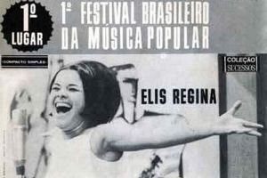

MPB - Música Popular Brasileira
O que é MPB?
O conceito de Música Popular Brasileira, ou MPB, nasceu no começo dos anos 60, ancorado em preceitos culturais, artísticos e até mesmo políticos. No entanto, esse mesmo conceito ― que chegou a rejeitar a guitarra elétrica na música brasileira, por ser um estrangeirismo ― sofreu muitas modificações ao longo das décadas. Hoje, a ideia do que é música popular brasileira parece ser muito mais ampla.
Como surgiu?
O surgimento da MPB está intrinsecamente ligado com o golpe militar e o enfraquecimento da bossa nova enquanto movimento musical hegemônico. O marco inicial da MPB foi a apresentação da cantora Elis Regina no 1º Festival de Música Popular Brasileira, em 1965. A cantora interpretou a canção “Arrastão”,composição de Edu Lobo e Vinícius de Moraes.
Contexto Histórico:
A Ditadura Militar teve início no Brasil em 1964, com o intuito de redemocratizar o país e libertá-lo de qualquer comunista ou ser pensante que apresentasse riscos a esse regime político. Com o Ato Institucional n° 5, alguns direitos importantes foram tirados da população, como por exemplo a possibilidade de se manifestar politicamente. Foi criada na época a DCDP -Divisão de Censura de Diversões Públicas, por onde passavam qualquer produção cultural realizada no país. Essa produção era aprovada ou não pelo regime. Caso aprovada, poderia ser veiculada para o público e nos meios de comunicação. Caso não fossem aprovadas, as produções ficariam retidas, e não poderiam ser executadas.
Veja a baixo imagens que remetem a conxto histórico:
Imagem 1
Imagem 2
Imagem 3
Imagem 4
Os artistas, para falassem da atual situação do país, precisavam usar metáforas. As palavras ditas tinham significados diferentes do que os militares acreditavam ter. “Cálice”, de Chico Buarque e Gilberto Gil,por exemplo, são músicas características dessa época. Qualquer manifestação que não concordasse com o governo vigente era considerada subversiva e sujeita a punições. Além da censura enfrentada pelos artistas e pela população em geral, as pessoas eram submetidas à tortura, prisão, exílio, e até a morte. Em nome do que eles chamavam de “ordem nacional”,muitas pessoas foram perseguidas no país.
Cálice - Chico Buarque e Gilberto Gil
- Pai, afasta de mim esse cálice
- Pai, afasta de mim esse cálice
- Pai, afasta de mim esse cálice
- De vinho tinto de sangue
- Como beber dessa bebida amarga
- Tragar a dor, engolir a labuta
- Mesmo calada a boca, resta o peito
- Silêncio na cidade não se escuta
- De que me vale ser filho da santa
- Melhor seria ser filho da outra
- Outra realidade menos morta
- Tanta mentira, tanta força bruta
- Como é difícil acordar calado
- Se na calada da noite eu me dano
- Quero lançar um grito desumano
- Que é uma maneira de ser escutado
- Esse silêncio todo me atordoa
- Atordoado eu permaneço atento
- Na arquibancada pra a qualquer momento
- Ver emergir o monstro da lagoa
- De muito gorda a porca já não anda
- De muito usada a faca já não corta
- Comoé difícil, pai, abrir a porta
- Essa palavra presa na garganta
- Esse pileque homérico no mundo
- De que adianta ter boa vontade
- Mesmo calado o peito, resta a cuca
- Dos bêbados do centro da cidade
- Talvez o mundo não seja pequeno
- Nem seja a vida um fato consumado
- Quero inventar o meu próprio pecado
- Quero morrer do meu próprio veneno
- Quero perder de vez tua cabeça
- Minha cabeça perder teu juízo
- Quero cheirar fumaça de óleo diesel
- Me embriagar até que alguém me esqueça
Caracteristícas do MPB
Além da forte presença dos protestos e críticas à situação política do Brasil, a MPB também é e foi marcada pela valorização das diversas expressões musicais do país. Dessa forma, diferente de gêneros nacionais como a bossa nova, que possuía características sonora, visual e até vocal bem delimitadas, a MPB era marcada pela diversidade. Na música popular brasileira encontramos misturas de gêneros e expressões musicais de todo o país, com origens indígenas, africanas e europeias. Gêneros como samba e a própria bossa nova influenciaram a construção de uma “identidade” da MPB. Os artistas e suas regionalidades também. É importante destacar que a maioria desses artistas não eram músicos “exclusivos” da MPB.
Vejamos abaixo alguns exemplos de clássicos da MPB:
| Música com mais popularidade | Cantor(a) | Ano de lançamento |
|---|---|---|
| Garota de Ipanema | Tom Jobim | 1962 |
| Jorge Maravilha | Chico Buarque | 1979 |
| O bêbado e a equilibrista | Elis Regina | 1979 |
| A Banda | Caetano Veloso | 1976 |
| Comportamento Geral | Gonzaguinha | 1973 |
| O mundo É Um Moinho | Cartola | 1976 |
| Cowboy Fora da Lei | Raul Seixas | 1987 |
| Sangue Latino | Secos & Molhados | 1973 |
| Alegria, Alegria | Caetano Veloso | 1968 |
Importância da MPB no Brasil?
Além de contribuir para a cultura do país, a Música Popular Brasileira também teve uma importância muito grande para a criação e manutenção de diversos movimentos sociais.
Por esse motivo, além de um movimento artístico e cultural, a MPB também pode ser classificada como um movimento político e social.
Especialmente durante o regime militar, a MPB foi uma peça essencial na luta contra a censura e na busca do resgate das raízes culturais brasileiras, fazendo com que a história desse gênero musical se misturasse com a própria história do Brasil.
Para entender o tamanho dessa importância, basta que a gente se lembre de músicas como “Apesar de Você” ou “Cálice”, de Chico Buarque e Gilberto Gil, que combatiam a censura de uma maneira elegante e que passava quase despercebida pelos censores da época. Outro exemplo clássico é a canção “Pra Não Dizer Que Não Falei das Flores”, de Geraldo Vandré, que foi um verdadeiro hino no combate à repressão.
Escute Nossa Playlist Personalizada: